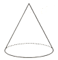
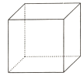
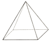
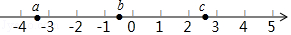
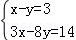
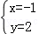
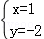
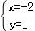
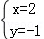

2018年北京市中考数学试题 · 选择题 第1、2、3、4、5题
1．（2.00分）下列几何体中，是圆柱的为（ ）
A．B．

C．
D．
2．（2.00分）实数a，b，c在数轴上的对应点的位置如图所示，则正确的结论是（ ）

A．|a|＞4B．c﹣b＞0C．ac＞0D．a+c＞0
3．（2.00分）方程组

的解为（ ）A．

B．
C．
D．
4．（2.00分）被誉为“中国天眼”的世界上最大的单口径球面射电望远镜FAST的反射面总面积相当于35个标准足球场的总面积．已知每个标准足球场的面积为7140m2，则FAST的反射面总面积约为（ ）
A．7.14×103m2B．7.14×104m2C．2.5×105m2D．2.5×106m2
5．（2.00分）若正多边形的一个外角是60°，则该正多边形的内角和为（ ）
A．360°B．540°C．720°D．900°